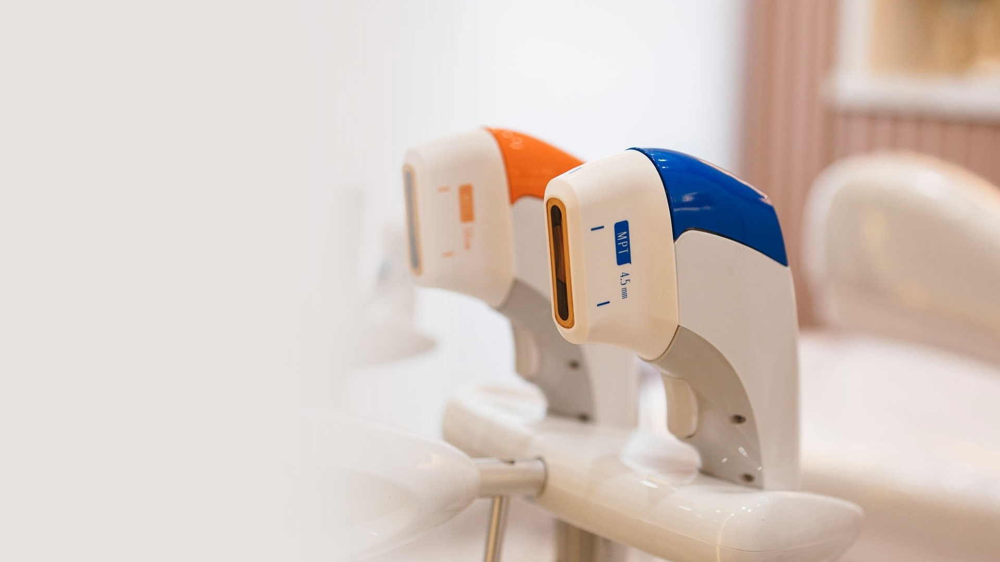
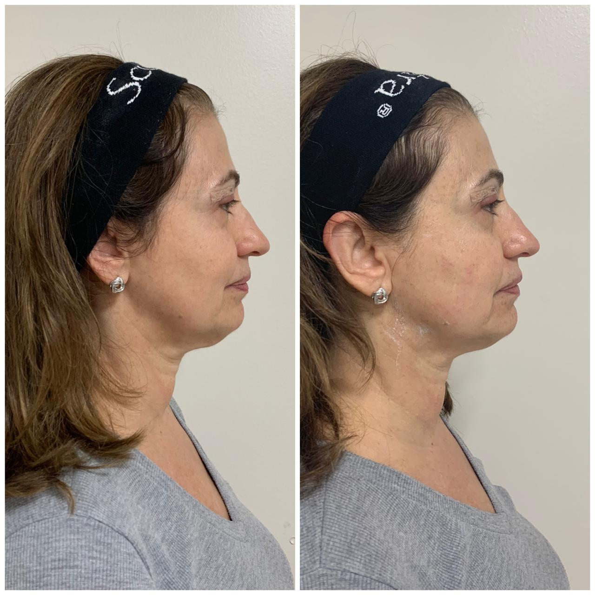

Medo do resultado artificial
Você quer melhorar, mas não parecer diferente de si mesma. A naturalidade é inegociável, e você tem razão em exigir isso.
Ultraformer MPT — Curitiba
Tecnologia de ultrassom micro e macrofocado para efeito lifting e rejuvenescimento facial, com resultado progressivo e natural.
Você se identifica?
Você quer melhorar, mas não parecer diferente de si mesma. A naturalidade é inegociável, e você tem razão em exigir isso.
Corte, anestesia, semanas de recuperação, afastamento do trabalho... Existe um caminho diferente, e é exatamente isso que precisamos conversar.
Na internet, todo mundo diz que é especialista. Você merece alguém que avalie a sua pele com honestidade e proponha o que realmente faz sentido para você.
A tecnologia
Enquanto os tratamentos convencionais trabalham apenas na superfície, o Ultraformer MPT age nas camadas mais profundas da pele, exatamente onde o envelhecimento começa. É o mesmo nível de tensionamento que antes só era possível com procedimentos cirúrgicos — agora, sem bisturi, sem corte e sem afastamento da sua rotina.

Ultrassom micro e macrofocado
Age nas camadas mais profundas da derme, estimulando a produção de colágeno novo onde a flacidez começa.
Trabalha no tecido adiposo superficial, remodelando o contorno facial de forma gradual e natural.
O colágeno se renova nas semanas seguintes ao procedimento. Você melhora com o tempo — sem exagero e sem mudanças bruscas.
O que você ganha
Tensionamento das estruturas profundas do rosto, o mesmo efeito do lifting, sem nenhuma incisão.
Você faz o procedimento e segue a sua rotina normalmente, sem vermelhidão intensa e sem afastamento.
Ninguém vai notar que você fez algo. Vão perceber você mais jovem e descansada.
O colágeno novo formado nos meses seguintes continua melhorando a qualidade e a firmeza da pele.
Cada rosto tem uma necessidade diferente. O protocolo é adaptado para a sua pele, não para um padrão genérico.
Os efeitos se mantêm por 12 a 18 meses, com possibilidade de sessões de manutenção para preservar o resultado.
A avaliação é o primeiro passo.
Quero agendar minha avaliaçãoIndicação
Resultados

Quem cuida de você
Escolher um dermatologista é escolher quem vai cuidar de uma das coisas mais importantes que você tem: sua pele. Essa decisão merece atenção.
Médica formada desde 2008, com residência em Dermatologia no Hospital de Clínicas do Paraná, uma das mais respeitadas do Brasil.
Membro ativa da SBD e da Sociedade Brasileira de Cirurgia Dermatológica, atualizada com as melhores práticas da especialidade.
Atenciosa, honesta e didática. Não empurro procedimentos: avalio com cuidado o que faz sentido para cada pessoa.
O que dizem os pacientes
Hoje venho com gratidão e felicidade, agradecer a Dra Mariana, poucos dias de tratamento em meu caso e já vejo quase 100% de melhora. Todos deveriam ter a oportunidade de desfrutar desse excelente trabalho! Parabéns Dra 💗
A Dra Mariana é uma excelente profissional. Muito atenciosa e na consulta demonstrou carinho e cuidado comigo. Tirou todas as minhas dúvidas sobre o tratamento que iniciei com ela. Estou muito feliz e agradecida.
Consulta acolhedora, atenciosa e que transmite muita segurança! Tenho gostado muito de todo o acompanhamento da Dra Mariana, além do atendimento das meninas que fazem os agendamentos e recepção. Recomendo!!
A Dra. Mariana foi muito querida e atenciosa em toda a consulta, me senti muito bem cuidada e ouvida, fiquei muito feliz em ter encontrado a Dra., foi a melhor consulta com dermato que já fui :)
Dúvidas frequentes
A sensação durante o procedimento é de um aquecimento intenso pontual. A maioria das pacientes descreve como tolerável. Trabalho com protocolos de conforto adaptados a cada pessoa.
Não. O Ultraformer MPT não tem afastamento da rotina significativo. Pode haver leve vermelhidão ou inchaço nas primeiras horas, mas você já sai do consultório e retoma sua rotina normalmente no mesmo dia.
Alguns pacientes percebem melhora já nas primeiras semanas. O resultado mais expressivo aparece entre 2 e 3 meses após o procedimento, quando o colágeno novo está plenamente formado, e continua evoluindo até o sexto mês.
Em média, de 12 a 18 meses. A durabilidade depende da idade, qualidade da pele e rotina de cuidados. Sessões de manutenção podem preservar o resultado por mais tempo.
Na maioria dos casos, uma sessão já traz resultados significativos. A necessidade de sessões adicionais é avaliada individualmente durante a consulta.
A avaliação é individual e personalizada. Na consulta, avalio sua pele, entendo suas queixas e objetivos, explico o procedimento com detalhes e proponho o que é mais indicado para o seu caso.
Localização
CRM-PR 26128 · RQE 2849
Ver rota no mapaAgende sua avaliação
Agende sua avaliação comigo e descubra se o Ultraformer MPT é o tratamento certo para você.